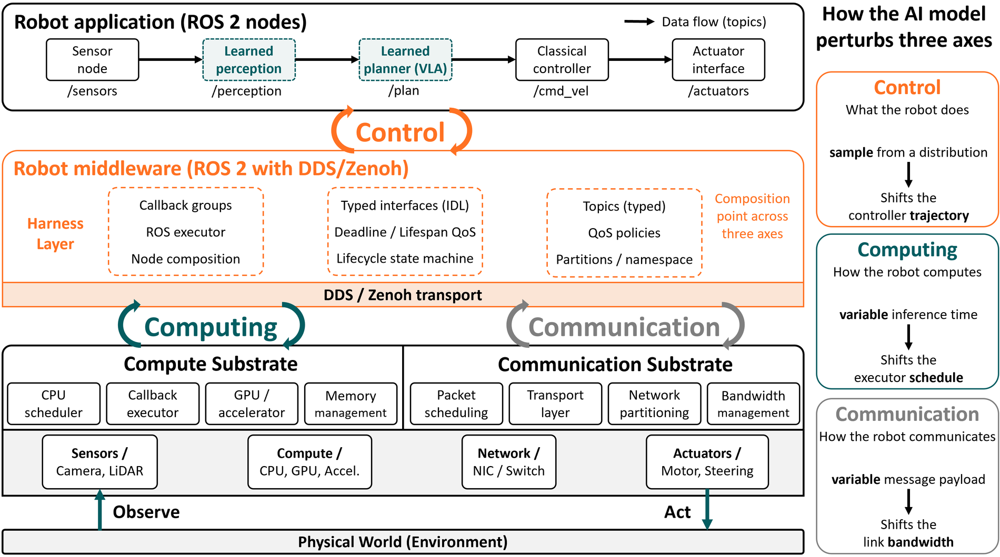
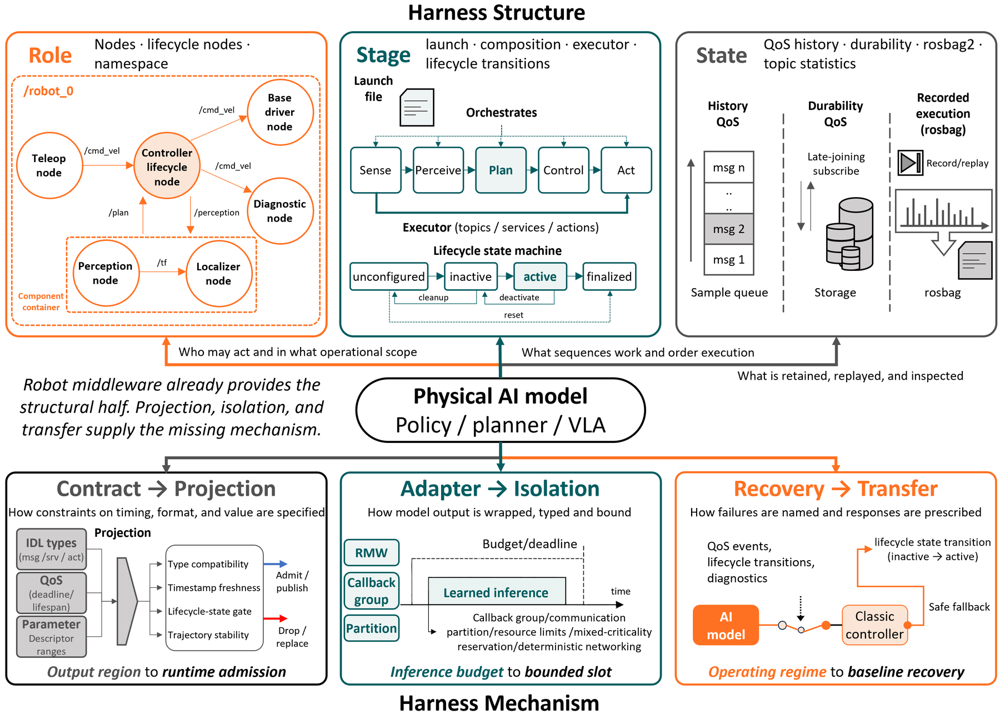
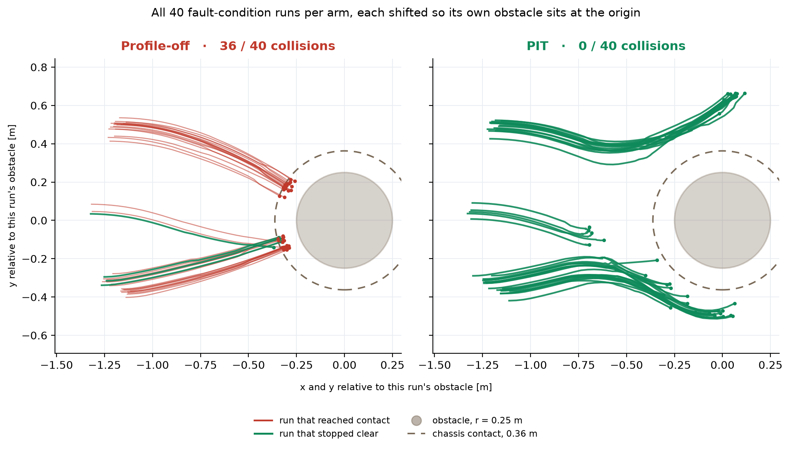

A learned policy's output crosses control, computing, and communication at once. We bind Projection, Isolation, and Transfer into a single declarative contract enforced at the ROS 2 middleware interface, and show it holding on Nav2 across two policies and two DDS backends without touching application or controller code.
Where existing enforcement stops
Learned policies, planners, and vision-language-action models now sit on the control path of deployed robots as causal participants. The layer that integrates them with timing, scheduling, and network guarantees has not been named.
A software harness mediates at the boundary of each tool call. A Physical AI harness cannot, because a single policy output moves all three axes at once. Its commands shift the controller's trajectory, its inference time shifts the executor's schedule, and its message payload shifts the link bandwidth.
Robot middleware is the one layer of the robot stack that holds mediating abstractions over all three axes at once. Operating-system runtimes and safety supervisors enforce individual constraints more deeply, and orchestration frameworks operate above the loop. Middleware is where per-axis enforcement can be composed into one contract.
A deterministic component made three properties implicit by design. Its output range was fixed by specification, its execution time bounded in closed form, and its operating conditions fixed when it was designed. The design was as good as the enforcement, so no external layer had to hold anything separately. A learned model provides none of them implicitly. Each has to be declared, and then something has to hold the model to it.
The open question is which layer can hold all three at once. The middleware community already took on the governance of learned workloads in the cloud, isolating multi-tenant GPU kernels and admitting inference requests by predicted quality. On the robot the picture is less settled.
Not every learned component needs one. The harness is needed only when the model is a real-time causal participant that is unbounded on all three axes at once. Three common cases fall outside it, because a classical component already holds the bounds the harness would supply.
The case addressed here is the one where a single model perturbs control, execution, and transmission at the same time.
What it takes to compose across three axes
To carry out a declaration, a layer has to observe and control the axis it constrains. One distinction decides the question. Observing and controlling a single axis is not enough to compose across three. The GPU or operating-system scheduler observes and controls the inference budget more deeply than the middleware ever will, the controller and the safety layer know the stability margin more precisely, and the network stack owns delivery. Each is the strongest enforcer on its own axis, and none of them can compose the three, because composition requires observing and controlling all three at once while each reaches only its own.
| Governance layer | Control | Computing | Communication |
|---|---|---|---|
| Robot application | ● | △ | – |
| Robot middleware, ROS 2 over DDS or Zenoh | ◐ | ◐ | ◐ |
| Communication substrate | – | – | ● |
| Compute substrate | – | ● | – |
● native, the layer owns the axis ◐ mediated, reached through the layer's own abstractions △ indirect, only through cross-layer plumbing – external, delegated elsewhere
Robot middleware owns no axis the way the substrates do, and that is precisely why it can be the harness. It exposes a mediated abstraction over each one, typed interfaces and QoS for control, callback groups and executors for computing, and QoS and partitions for communication. Those are interception surfaces. The middleware delegates per-axis enforcement to the owner of each axis and binds the three into a single cross-axis contract that no single owner can see. A fleet or cloud orchestrator governs above this loop, so it can never act inside it.

Three components present as structure, three present only as surfaces
Reaching all three axes does not by itself make a layer a harness. Recent harness accounts synthesise into six components, three that organise the system and three that govern what flows through it. Read against ROS 2, the first three are already present as structure. The other three exist only as surfaces, configuration points where a constraint can be written down while nothing enforces it.
| Component | Function | ROS 2 surface | Status |
|---|---|---|---|
| Role | Who may act, and in what operational scope | nodes, namespaces, lifecycle nodes | structure |
| Stage | What sequences work and orders execution | launch and composition, executor, lifecycle transitions | structure |
| State | What is retained, replayed, and inspected | QoS history and durability, rosbag2, topic statistics | structure |
| Contract | How constraints on timing, format, and value are specified | IDL types, QoS deadline, lifespan, reliability, ParameterDescriptor ranges | surface only |
| Adapter | How model output is wrapped, typed, and bounded | RMW and type adapters, callback groups, executors, partitions | surface only |
| Recovery | How failures are named and responses prescribed | QoS events, lifecycle transitions, diagnostics | surface only |
Each of the last three stops one step short. A ParameterDescriptor range is checked when
a parameter is set, and it leaves the per-sample output a policy publishes untouched, so a learned
sample reaches the link with its declared range unchecked. Type adapters handle typing while callback groups,
executors, and partitions handle bounding, but nothing ties them into one reservation matched to the
model's declared load. A missed deadline or a lost liveliness arrives as an event, a state transition,
or a diagnostic, and can be reported without being routed into a verified fallback.
A surface to specify a declaration exists. The mechanism that binds it to runtime behaviour does not. Enforcing it has always been left to hand-built application code.
Three functions a Physical AI harness must host
Each mechanism consumes one of the three declarations in a form the middleware can act on. The middleware enforces a declared contract and does not certify the declaration, which stays upstream work.
The three mechanisms close a loop, and each depends on what the others enforce. Isolation bounds the space Projection checks, so a sample that would overrun its slot fails admission even when its trajectory is stable. Projection's failures trigger Transfer, which holds authority at a deterministic baseline until Isolation reports the model's resource use back inside bounds and Projection reopens the gate. No layer below the middleware can observe all three axes at once, and no layer above can act in the loop.
PIT composes mechanisms that already exist. Projection may call a shield or a control-barrier predicate, Isolation may call a reservation scheduler, and Transfer may call a Simplex-style baseline. The contribution is that all three bind to one model declaration and are evaluated as one runtime contract. A stable command that misses its inference slot, or a timely command that falls outside the declared operating regime, is then rejected by a single governance layer that sees both conditions at once.

Most deployed systems fail it
A deployment hosts the harness when it accepts the declared output region, inference budget, and operating regime as one runtime contract, and composes enforcement of that contract across control, computing, and communication in one layer.
This is what separates the harness from the runtime-assurance mechanisms it builds on. Each of those is sound on its own axis and built per application, and each takes only the part of the declaration that falls on that axis.
| Mechanism | Axis it governs | Where it stops short |
|---|---|---|
| Control-barrier filter | Control | Gates the control axis without seeing the schedule or the link. |
| Mixed-criticality scheduler | Computing | Bounds execution with no view of control semantics or delivery. |
| Simplex monitor | Choice of controller | Switches controllers without a declared budget or transport contract. |
| Nav2 recovery behaviour | Plan health | Acts on plan health with no compute or communication reservation. |
| Autonomous-racing stack | Control and computing | Comes closest, tying a control-axis safety condition to a computing-axis reaction-time change, but carries no declared contract another robot could reuse. |
ROS 2 has been used as a tool registry that an agent calls, and it has been wrapped by a separate governance layer placed between the application and ROS 2. Such a framework checks each capability the agent invokes. That check does not reach end-to-end models that emit continuous actions without invoking discrete capabilities.
The publish path catches both. Every output leaves the application through the same publish call, whether it comes from a discrete capability invocation or from a monolithic policy, so a Projection hook placed there applies the same check to both. The position taken here is that robot middleware should be the harness itself.
A deployment artifact that declares intent
The first thing to build follows directly from the failure above. A Harness Profile is a manifest, written for example as a YAML file beside the launch description, that declares the output region, the inference budget, and the operating regime. The Profile is only a declaration. The mechanisms that enforce it are implemented across ROS 2, DDS, and Zenoh, binding the output region to the publish path, the inference budget to a joint reservation, and the operating regime to a lifecycle controller the middleware already owns.
harness_profile:
subject: learned_local_control
port: motion_candidate
output_region: {forward_velocity: [0, 1.5], yaw_rate: [-1, 1]}
max_sample_age_ms: 5
inference_budget: {wcet_ms: 8, rate_hz: 100}
transport_budget: {max_payload_bytes: 4096, deadline_ms: 2}
operating_regime: {signal: distribution_score, max: 0.7}
fallback_role: verified_local_controllerSuch a profile need not be a new programming model. It is a deployment artifact the middleware consumes directly, and it gives the middleware a single object to admit, monitor, and revoke. Certification of the bounds stays upstream. The Profile carries them and the middleware enforces them. Adoption is incremental. A node that declares no profile keeps its current behaviour, and the harness binds only the outputs a profile names, so an existing stack gains governance one model at a time.
The evaluated instance expands the same declarations into per-mechanism blocks that name what happens on each violation. Both state only the meaning of the control, timing, communication, and fallback constraints. Node names, plugin names, and vendor callback classes appear in neither.
harness_profile:
schema: pit.profile/v1
subject: learned_local_control
port:
logical_name: motion_candidate
type_contract: differential_drive_command/v1
projection:
fields:
- {semantic: forward_velocity, min: -0.01, max: 0.60}
- {semantic: yaw_rate, min: -1.10, max: 1.10}
on_value_violation: replace_safe_zero
max_sample_age_ms: 80
on_stale: drop
isolation:
expected_rate_hz: 20
compute_budget_ms: 40
delivery_deadline_ms: 80
on_violation: transfer
transfer:
primary_role: learned_controller
fallback_role: verified_local_controller
require_fresh_output: true
authority_lease_ms: 80Semantic Harness Profile declares meaning only
↓ compile
Vendor-neutral Contract IR ObservedSample · ObservedStatus · Decision · Evidence
↓ backend capability check
Backend adapter, per RMW normalise · enforce · return evidence
↓ deployment binding
ROS 2 application graph topics, types, field paths, endpointsThe PIT decision core reads only the Contract IR and returns the same decision for the same input.
Each backend ships a capability descriptor, and a capability it does not declare fails closed at
profile-compile time. Neither of the two evaluated descriptors claims
native_requested_deadline_status or native_writer_ownership_transfer, so the
contract is evaluated on the surfaces the middleware exposes, namely typed samples, source timestamps,
QoS, and lifecycle state.
At the ROS 2 interface, on the surfaces Figure 1 marks as the harness layer
The gate sits on the typed ROS 2 path between the application graph and the DDS or Zenoh transport. It reads typed samples, source timestamps, QoS state, and lifecycle state, and it admits, replaces, or withholds each sample before the actuator endpoint. These are the surfaces the paper identifies as the middleware's mediated abstractions, and they are the ones Figure 2 draws under Contract, Adapter, and Recovery.
Robot middleware here means what the paper means by it, the composition of ROS 2 over a DDS or Zenoh transport. Its contribution across the three axes is a set of interception surfaces, so an enforcement point placed on those surfaces sits at the middleware layer by construction. Neither controller was touched, and no node in the Nav2 graph was modified.
160 runs · 2 DDS × 2 policies × 2 modes × 2 conditions × 10 held-out seeds
We evaluate on ROS 2 Nav2 with two public learned navigation policies, DRL and DRL-VO, and DWB as the verified fallback. Enforcement sits at the ROS 2 boundary after the Collision Monitor and before the actuator.
An unexpected processing delay. After ten non-zero commands the boundary begins holding each command from the learned controller for 121 ms, 120 ms of compute and 1 ms of transport, and keeps that up for a 3-second burst. The command in flight when the burst begins is frozen, so the actuator keeps receiving that same value while the robot moves on. It stays inside the declared value bounds the whole time. The Profile allows 80 ms of staleness and a 40 ms compute budget, so only the clock is violated.
Both are public checkpoints from TempleRAIL/drl_vo_nav, trained in the same environment with the same observation and action families. They share an architecture and differ in one reward term, which is the kind of difference the harness should be indifferent to.
drl_vo/src/model/drl.zip. Ported from the upstream ROS 1 node, since the official
ROS 2 branch packages only the DRL-VO checkpoint.drl_vo/src/model/drl_vo.zip. The velocity-obstacle based heading-direction reward
term is included during training.Both are sensor-conditioned, meaning they map each observation directly to a command. Both open under the same observation-space shape, action-space
shape, CustomCNN class, and Stable-Baselines3 loader, and both emit a bounded
Twist through the same planner binding. The source commit and both checkpoint SHA-256
values are pinned in the run manifest.
The point is what the Profile does not contain. It carries no policy name, no checkpoint path, and no controller class. It states value bounds, a freshness limit, a rate and compute budget, a delivery deadline, and a fallback role. Which policy sits behind the logical port is a deployment binding, and the contract stays the same across all of them.
Twist, and observation-to-candidate latency.The compiled Profile was byte-identical and hash-identical across all four cells. Swapping DRL for
DRL-VO, or Fast DDS for Cyclone DDS, changed the deployment binding and
RMW_IMPLEMENTATION only. Application source modified: 0 LOC. Controller source
modified: 0 LOC.
The obstacle is not placed at a fixed coordinate. It is spawned at a fixed predicted arc length of about 1.04 m along the arc obtained by integrating the command that was sitting in the queue at the moment the fault fired. Across all ten held-out seeds and both arms the range stays within 1.036 to 1.045 m.
This is deliberate. Placing the obstacle on the predicted arc means every run meets an obstacle that is equally in its own way. The contract, the fault, the selection threshold, the arc length, and the obstacle duration are all fixed in one byte-identical file.
The consequence is visible below. The two panels place the obstacle at different coordinates because the queued angular velocity differed (−0.112 rad/s against +0.102 rad/s, giving bearings of −13.0° and +11.7° from the robot heading). Same rule, same arc length, different queued command. The dotted gold arc in the plan view below is that prediction.
The two runs below are the same matched pair the figures draw. Press play and the robot moves along the pose trace each run actually recorded, the obstacle appears at the moment it was activated, and every stale command, projection block, and transfer fires at its recorded timestamp. The gold marker is where the delay starts.
This is a replay of the recorded pose traces and event timestamps. The scene is drawn from the recorded positions, with the TurtleBot3 Burger body and the obstacle both to scale. The obstacle is the cylinder the runs actually spawn, 0.25 m in radius and 0.80 m tall. Positions come from the navigation feedback trace at about 6 Hz and are interpolated between samples. The replay stops the robot at the moment the two footprints meet, because the obstacle is a solid body and that is where the encounter ends. The verdict shown at the end is the audited minimum from the clearance monitor, which samples independently and less often. The two agree for PIT at +0.22 m. For Profile-off the pose trace dips to −0.42 m while the audited minimum is −0.31 m, and the verdict is an overlap on either stream.

The figure is generated from the run records by
analysis/plot_c7_all_runs.py, and the replay above by
analysis/make_replay_payload.py. Both ship with the repository.
| DDS | Policy | Profile-off | PIT | Risk reduction | 95% CI | McNemar p |
|---|---|---|---|---|---|---|
| Fast DDS | DRL | 8/10 | 0/10 | 0.80 | [0.50, 1.00] | 0.0078 |
| Fast DDS | DRL-VO | 10/10 | 0/10 | 1.00 | [1.00, 1.00] | 0.0020 |
| Cyclone DDS | DRL | 9/10 | 0/10 | 0.90 | [0.70, 1.00] | 0.0039 |
| Cyclone DDS | DRL-VO | 9/10 | 0/10 | 0.90 | [0.70, 1.00] | 0.0039 |
Equal-weighted across the four strata, the collision-risk reduction is 0.900, stratified bootstrap 95% CI [0.800, 0.975]. Including the normal baseline, the difference-in-differences benefit is 0.875, CI [0.775, 0.975]. Minimum-clearance benefit under fault is +0.3255 m, CI [+0.2920, +0.3575] m. Collision here means geometric footprint overlap at a combined radius of 0.47 m.
| Observation under fault | Profile-off | PIT |
|---|---|---|
| Runs admitting a stale final command at the actuator boundary | 40/40 | 0/40 |
| Stale commands admitted | 447 | 0 |
| Transfer to DWB | 0/40 | 40/40 |
| DWB local-plan evidence and first fresh fallback command confirmed | 0/40 | 40/40 |
Isolation detected the timing violation, Projection denied publication under the joint contract, and
Transfer initiated the handoff. Handoff latency was 302.39 ms median and 371.46 ms at
p95. All 160 trials reached SUCCEEDED or HORIZON_COMPLETE.
What the claim is, stated precisely
A new DDS requires a backend capability descriptor and its connector. It does not require changes to the Harness Profile semantics, the PIT core, the learned controller, the fallback controller, or the application code.
The same profile ran unchanged across Fast DDS and Cyclone DDS and across both policies. Swapping
the backend changes RMW_IMPLEMENTATION and the backend identity only. We do not claim
that every DDS is supported automatically without a connector. What the two backends demonstrate is
that the decision core is RMW-agnostic at the ROS 2 interface.
What it takes to build each binding, and the hard part of each
The Nav2 evaluation shows the composition holding on one fault under one stack. Turning it into a platform capability means building three bindings into the middleware itself. Each has a part that is genuinely open, and naming it is more useful than claiming the binding is straightforward.
A ROS 2 message reaches the link through a fixed path. A publish call hands the sample down through the client library to the RMW layer and then to DDS, and nothing along that path provides a generic semantic admission gate that checks a learned output against its declared control, schedule, and link contract. Projection needs a predicate evaluated before the sample is handed down, one that can admit it, drop it, or replace it with the last admitted value. An autonomous-racing stack already runs such a predicate over its learned output every cycle, but it does so in application code.
Today a developer who wants to bound a model's footprint sets two things separately, a callback group on the executor and a partition with a bandwidth limit on the DDS side, and nothing checks that the two are consistent or that together they fit the model's declared load. Isolation asks for a single primitive that takes a declaration of output rate, payload size, and worst-case inference time, derives both settings jointly, and admits or rejects the reservation against what the platform has already committed. Mixed-criticality scheduling and DDS-over-TSN supply the analysis, and what is missing is their integration into the one reservation a robot declares and the middleware admits.
ROS 2 managed nodes already provide the state machine Transfer needs, an active state, an inactive state, and transitions between them. Today those transitions are commanded by an operator or a launch script, with no automatic trigger and no defined way back. Transfer asks for a controller in the middleware that consumes a distributional indicator the model emits, an out-of-distribution score or a confidence estimate, drives the active-to-inactive transition itself, and activates a verified baseline node staged in advance.
The language-agent community made a methodological move that robotics can copy outright. It reported the harness together with the model, and built benchmarks that held the model fixed and swapped the harness, where reliability then moved by an order of magnitude. Physical AI has no such instrument.
For a decade the robot middleware community competed on one axis, which transport had the lowest latency, which executor the tightest jitter, which discovery protocol scaled to the largest fleet. That competition was productive and it is not finished. Physical AI moves the binding constraint. When a learned model can swing a robot's reliability by an order of magnitude depending on what governs it, the layer that governs the model matters more than the layer that delivers its messages a few microseconds sooner.
Integrity audit of the reported matrix
matrix_complete = true, mechanism_invariants_passed = true, zero
mechanism failures.Profile SHA-256 625b6649e1cf28e673dd4bf8df6af71bbdde55ebfe96457c033d9b96fd87078d
Manifest SHA-256 402c2d363e0625880025308db9dee0c7eed1daebdd317343e434ded86bbc9dc7
Analyser SHA-256 1d318db8256c21209d26e1ce29ec38bd374fa78c10bfea8ff9f1ed6f73178292
Everything behind this page is public at csi-dgist/ros2-harness-profile
Start with Verify the published numbers, which re-derives every figure in this page from the shipped run records and needs nothing but Python. The DRL and DRL-VO checkpoints stay with their upstream project, and the README explains how to fetch and hash-check them.
Big Ideas track, ACM Middleware 2026
@inproceedings{lee2026harness,
title = {Harness Engineering for Physical {AI}:
Robot Middleware Is the Harness Layer},
author = {Lee, Sanghoon and Chae, Jiyeong and Park, Kyung-Joon},
booktitle = {Proceedings of the ACM/IFIP International Middleware
Conference (Big Ideas Track)},
year = {2026},
note = {arXiv:2606.09416}
}The preprint is on arXiv:2606.09416. Correspondence to Sanghoon Lee at DGIST.